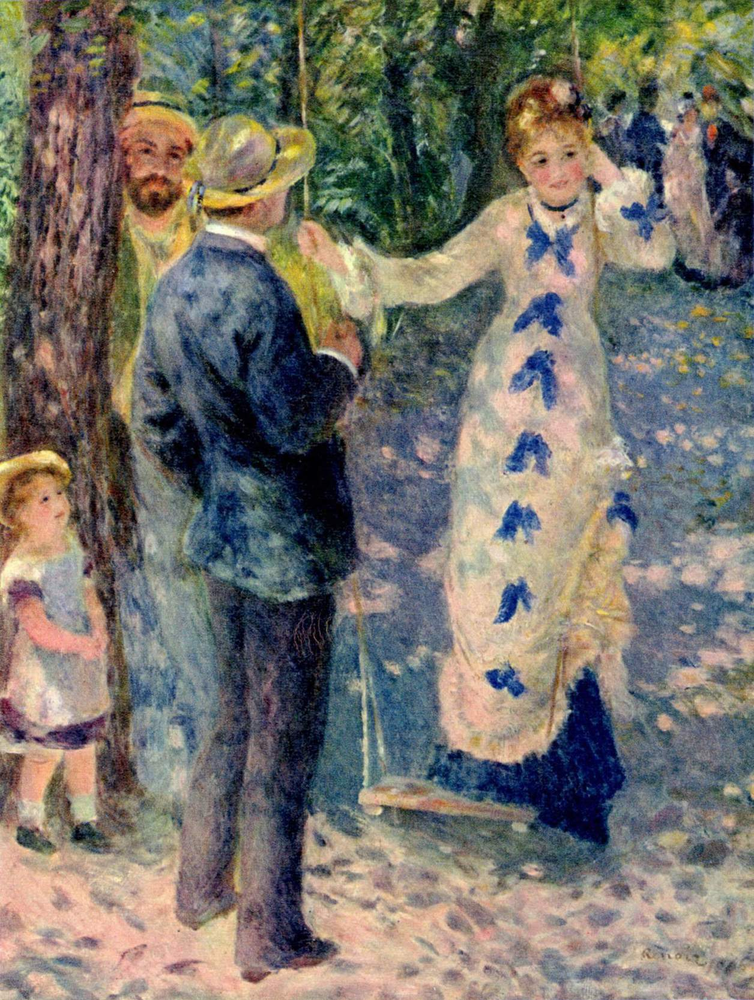
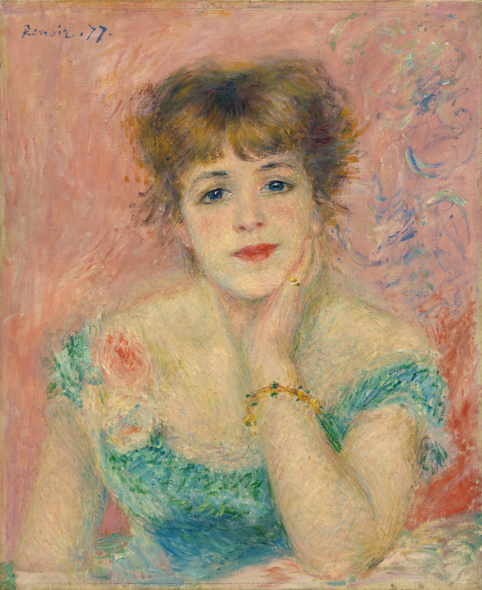
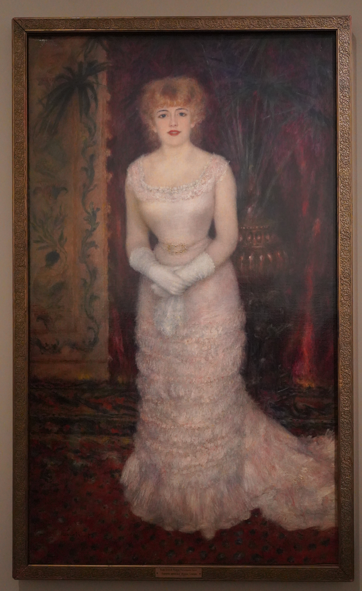
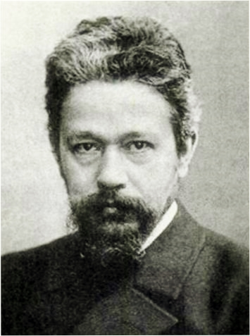
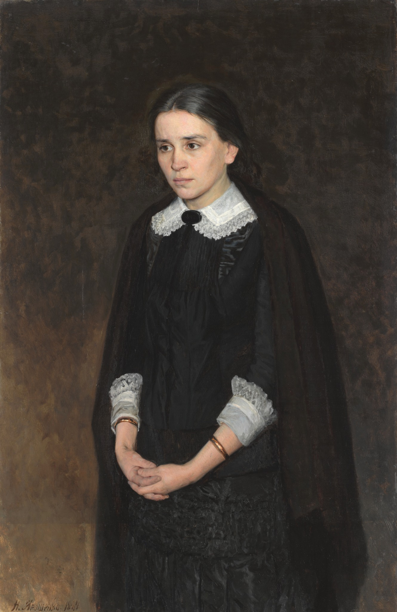

Capítulo 24
Jeanne Samary y Pelagia Strepétova
En el siglo XIX vivieron dos grandes actrices: la actriz francesa Jeanne Samary y la actriz rusa Pelagia Antípievna Strepétova. Y hay dos retratos que casi simultáneamente pintaron dos artistas: el pintor francés Auguste Renoir y el pintor ruso Nikolái Yaroshenko.
Dos mujeres, dos actrices, cada una de las cuales, en su país, en su mundo, fue la intérprete de sentimientos completamente nuevos. Fue en la época en que el teatro, en todo el mundo europeo, tanto en Rusia como en Inglaterra, en Francia y en Polonia, ocupó un lugar especial en la vida cultural. El teatro no era simplemente un lugar adonde la gente iba para ver nuevas piezas, para ver a nuevos actores. El teatro se convirtió en centro de la cultura, en centro de la vida social, en foco de todos los intereses, pasiones, luchas, de la nueva dramaturgia, de los nuevos repertorios. Y los actores principales eran entonces algo mucho más grande que las estrellas de cine en nuestra época. Atraían la atención de todos. En torno a ellos había lucha, tenían multitud de admiradores. Y tenían biografías muy interesantes. De dos de ellas se hablará en este capítulo.
Tanto Polina Strepétova (o Pelagia Antípievna Strepétova) como Jeanne Samary nacieron casi simultáneamente, y su vida fue muy breve. Jeanne Samary murió a los treinta y tres años, y Pelagia Antípievna a los cincuenta y tres.1
Empecemos por Jeanne Samary. Renoir pintó su retrato dos veces. En general su sombra aparece en distintas obras de Renoir: en su composición pictórica «El columpio»2 y en otras obras. Pero precisamente a ella la pintó dos veces. Jeanne Samary era la actriz principal de la Comédie-Française. Hoy es difícil imaginar qué atención la rodeaba: la atención de los contemporáneos, de los espectadores y de los reporteros. Interpretaba todo el repertorio de Molière. Jeanne Samary provenía del medio actoral tradicional, y no tenía ningún otro camino: solo el escenario. Y su debut en escena se produjo cuando tenía catorce años.3

Pelagia Antípievna Strepétova también provenía del medio actoral, pero de otra clase. Era huérfana, abandonada en la casa del peluquero Strepétov.4 Esa familia la quería mucho, y nada más que lo mejor puede decirse de las personas que la criaron. Y lo mismo que Jeanne Samary, Pelagia Antípievna salió a escena a los catorce años. Solo que Jeanne Samary vivió toda su vida en las tablas de la Comédie-Française, y Strepétova hizo muchísimas giras por la provincia rusa, como entonces se acostumbraba. Pero su gloria era tan grande que en 1881 se convirtió en la actriz principal trágica y cómica del Teatro Alejandrino de San Petersburgo.
Jeanne Samary era irresistible. Sus fotografías se diferencian mucho de sus retratos. Las fotografías son en general cosa extraña: en ellas parece un poco pesada, rellenita, tiene un mentón macizo… pero ¿qué es una fotografía? En cambio el retrato de Renoir es otra cosa. Cuando Auguste Renoir la vio, a Jeanne Samary, se enamoró de ella hasta tal punto que los padres de Jeanne Samary incluso tenían la intención de casarla con el pintor5. Ella era famosa, y él era famoso. Pero el retrato de ella lo hizo famoso a él, y ella se hizo igualmente famosa a través de su retrato. Es un retrato extraordinario, asombroso. Renoir lo pintó con entusiasmo y amor. Actualmente ese cuadro, pintado en 1877, se encuentra en el Museo de Bellas Artes Pushkin. ¡Dios, qué mujer tan cautivadora! Flequillo rojo y espeso, óvalo suave del rostro, mentón, labios escarlata, hombros descubiertos, vestido esmeralda con una flor rosada sobre fondo rosado… Jeanne Samary era una belleza, una celebridad, una mujer elegante que atraía la atención de todo París. Renoir estaba tan enamorado de ella, la sentía con tal sutileza, pintaba su retrato con tal entusiasmo, que creó una auténtica obra maestra pictórica. E incluso si no supiéramos de quién es el retrato, podríamos decir igualmente que es el retrato de una mujer irresistiblemente bella, pintado con virtuosismo por un pintor impresionista.

En París, hace unos años, se organizó una exposición titulada «Impresionismo y moda». Fue una exposición asombrosa: mostraba no tanto la moda de la época de los impresionistas cuanto a las magníficas mujeres de ese tiempo, pintadas por los artistas impresionistas. En sus cuadros pasa ante nuestros ojos todo el París de la época de los banquetes, la época en que la mujer reinaba en el mundo, era la heroína principal de las novelas, cuando era la heroína principal de toda la literatura, cuando era el héroe de la vida misma y atraía la atención general.
Y he aquí que el siguiente retrato Renoir lo pintó un año después, y es ya una imagen completamente distinta. No es un retrato íntimo, en que el pintor se extasía ante su modelo, sino un retrato representativo, de salón, de aparato. Jeanne Samary está de pie; el pintor la pintó de cuerpo entero. Lleva un vestido sin par, blanco, pero con reflejos rosados. El mismo flequillo rojo espeso. Se inclina ligeramente hacia adelante, las manos con guantes blancos, en las manos un abanico. Está, como sabemos, en el salón de la famosa madame Charpentier.6 Jeanne Samary no era solo una actriz famosa que interpretaba todo el repertorio de la Comédie-Française. Jeanne Samary fue además la primera actriz que en los salones leía a los poetas franceses.7 Era recitadora, y leía no solo a Victor Hugo, en cuyas piezas actuaba, sino también a poetas contemporáneos, poetas nuevos, como Mallarmé. Actuaba en los salones recitando versos: cosa completamente extraordinaria. Atraía la atención general; iban a escucharla como hoy vamos a escuchar a los maestros de la palabra artística. Esta mujer ocupaba un lugar muy grande en la sociedad… y además era tan cautivadoramente hermosa.

En cuanto a Pelagia Antípievna, gozaba de una fama aún mayor: su nombre resonaba por toda Rusia, era famosa ya en la provincia. Tanto en Nóvgorod como en Samara, donde actuaba, y, por supuesto, en Moscú los grandes teatros la ansiaban. Y en 1881 se convirtió en la prima del Teatro Alejandrino. A Strepétova la pintaron pintores rusos: Repin, Vasnetsov… Pero su retrato principal lo dejó el notable pintor ambulante8 y hombre muy interesante llamado Nikolái Yaroshenko.

Yaroshenko pertenecía al círculo democrático de la intelectualidad rusa y, lo más importante, profesaba la doctrina realista de los ambulantes. Cuando pintó el retrato de Pelagia Antípievna, una de las personas más brillantes de entonces dijo que los dos, en ese tándem —ella en el retrato, y él, que había pintado su retrato—, hablan como Tolstói y pintan como Repin. ¿Puede haber una caracterización más alta? Este retrato fue recibido no solo como un acontecimiento en la pintura retratística, sino como expresión de algo de lo más íntimo, de una profundidad espiritual extraordinaria.

Pelagia Antípievna está representada con su atuendo preferido. Como mujer, a diferencia de Jeanne Samary, no era especialmente bella: baja, frágil, de brazos largos, con un moño mal recogido, no muy cuidadosa de su persona. Lo que más la enorgullecía eran sus atuendos con puños de almidón blanquísimos, cuello de almidón blanquísimo y chal sobre una figura encorvadita, y quizá incluso un poco jorobada. Polina Strepétova no era un ángel. Era una auténtica prima del teatro ruso, que se había abierto ella misma el camino. Era una mujer histérica, según la opinión general, de carácter difícil. Entre sus romances hubo uno con un hombre joven: su tercer y último marido era mucho más joven que ella9. Y hubo tales pasiones que ese marido suyo, Aleksandr Pogodin, simplemente se pegó un tiro en el umbral de su dormitorio. Así que la dama no era en absoluto sencilla.
Pero en el retrato de Yaroshenko vemos lo que veía en ella la cultura, lo que veían en ella los espectadores y el propio pintor: una mujer silenciosa de rostro pálido, con ojos enormes en los que parecía haberse petrificado el sufrimiento de todas las mujeres rusas. La pintó con esos puños blancos; se parece a una revolucionaria populista: esos ojos que miran hacia dentro de sí, ese tipo introvertido tan pesado y a la vez trágico… ¡Qué diferencia tan llamativa respecto del sol que salpica en todas direcciones de madame Samary!
Y si Jeanne Samary leía a los poetas parnasianos y a Mallarmé, Pelagia Antípievna fue la primera que recitó a Nekrásov en versión escénica. Los estudiantes la llevaban en brazos, gozaba de una popularidad extraordinaria. Y si Jeanne Samary interpretaba el repertorio de Molière, Hugo, Schiller, Polina Strepétova fue la gran intérprete de Ostrovski. Era actriz de Ostrovski. ¡Cómo interpretaba a Kruchinina («Sin culpa culpables»)! Y su Katerina en «La tempestad» es simplemente leyenda.
Cada artista, sobre todo un gran artista, es talentoso no solo en lo que hace (escriba versos, escriba música). Vive en el texto cultural de su tiempo, y está muy desamparado y solo si vive fuera del texto cultural de la tradición. Volvamos a nuestros héroes: no a las damas, no a Polina Strepétova y Jeanne Samary, sino a los pintores, a Yaroshenko y Renoir. Cada uno de ellos era en grado sumo un hombre de la segunda mitad del siglo XIX: en Rusia y en Francia. Cada uno de ellos era además un portador inconsciente de su gran cultura nacional, cada uno de ellos era un gran pintor nacional.
Renoir, con todo su innovadorismo, su impresionismo, era culturalmente francés hasta la médula, el último trovador, el último cantor de la Bella Dama. Y no era solo su apego impresionista, sino que lo llevaba en la sangre, era una tradición profundamente asimilada por él. Siempre creemos que solo es importante lo que somos conscientes. Pero existe además una genética artística, y no solo una genética a nivel biológico. Y es muy importante. Estaba en Renoir, y he aquí que pinta a Jeanne Samary como Bella Dama. Si miramos la pintura europea del siglo XIII, a las madonnas de ese período, veremos que esos pintores son antiquísimos predecesores de Renoir. Pintaban a la Madre de Dios, y la Madre de Dios es el arquetipo de la mujer, y ya entonces la pintaban como Bella Dama.
¿Y en qué cultura vivía Yaroshenko? Iba a la iglesia ortodoxa, era carne de la carne de su cultura nacional, sabía quién es la Siempre Virgen Madre de Dios. Para él el ideal femenino estaba vinculado al concepto de sacrificio, lo que en Renoir no podía existir. En Yaroshenko no hay contemplación, sino arrobo de lágrimas, «ángel de pura belleza»10, pureza y sacrificio: lo que estaba depositado en él genéticamente. ¿Puede decirse que las imágenes femeninas en la literatura rusa llevan en sí algo distinto? En toda la literatura rusa, y en toda la pintura rusa, por no hablar ya de los iconos. Miremos los retratos de Rokotov, los retratos de los pintores del siglo XVIII: dentro de cada mujer vive un ángel, un alma angélica. Por supuesto, Pelagia Antípievna no es un ángel, eso se ve también en el retrato. Pero es la Madre de Dios doliente, se duele por todos. ¿Cuáles fueron sus últimas palabras en el lecho de muerte? Dijo: «He servido a mi pueblo».11 ¡Una mujer en el lecho de muerte dice que ha servido a su pueblo! Jeanne Samary no dirá eso. Besará a sus hijos, se ocupará del testamento, recordará alguna otra cosa, olerá una flor. Pero no dirá: «He servido a mi pueblo».
Aquí hay un bastidor contra el que todo choca. Ese bastidor es el siglo XI de la cultura europea, cuando en 1054 se produjo el famoso cisma de las iglesias12 y cuando, en ese cisma, la Iglesia occidental (latina) y la griega no lograban ponerse de acuerdo en una cuestión: la de quién es la Madre de Dios. La Iglesia griega dice que la Madre de Dios es la Siempre Virgen Madre de Dios, es decir, es ante todo virginidad absoluta, principio purificador del mundo. Cuando en algún lugar ocurre una epidemia de cólera, en ese lugar se erige una iglesia de la Madre de Dios. Es el principio purificador, purifica la tierra. Y la Madre de Dios ofrece a su hijo en sacrificio. Y la Iglesia latina dice: la Madre de Dios es reina del cielo. Su hijo es rey del cielo, y ella es reina. Por eso en los iconos de los siglos XI–XII aparece un asunto que nosotros no tenemos: la llamada coronación de la Madre de Dios, cuando vemos que el Hijo corona a la Madre de Dios: rey del cielo y reina del cielo. Ella es reina; de ahí la veneración ante ella, el servicio a ella, la línea cortés, que en Rusia no existe.
El arte del siglo XIX, en sus mejores manifestaciones, se distingue por una profundidad espiritual y plástica extraordinaria. Y cuando Yaroshenko pinta a Pelagia Antípievna, no le importan nada sus maridos, ni que Pogodin se pegara un tiro en el umbral de su dormitorio, ni que ella lleve puños blancos… Él ve en ella, a pesar de todo, a la Siempre Virgen. Ve en ella ese alto principio catártico purificador, sufrimiento y sacrificio, porque ella es el mejor representante de su sociedad.
Exactamente igual Renoir, cuando pinta a Jeanne Samary, ve en ella a la Bella Dama. Es lo más alto que puede decir de ella: ella es la Bella Dama.
Cuando nos ocupamos de este tema, lo leemos de un modo demasiado simple, desde un solo plano externo: el decorativo, el argumental, el compositivo o el selectivamente aficionado. Olvidamos que hay además otro estrato más profundo del arte: no vive en el mundo desde el primer día, y lleva en sí un profundo misterio, una larga estela de su hermoso pasado.
Notas del editor
1. Jeanne Samary (1857–1890) murió de fiebre tifoidea. Pelagia Strepétova (1850–1903) nació siete años antes que ella, así que lo de «casi simultáneamente» hay que tomarlo con holgura.
2. Suele decirse que la modelo de «El columpio» (1876, Orsay) fue una joven de Montmartre llamada Jeanne. Su identificación con Jeanne Samary no está documentada.
3. Jeanne Samary, sobrina de la gran actriz Augustine Brohan, entró en el Conservatorio a los catorce años. Debutó en la Comédie-Française en 1875, con dieciocho, en el papel de Dorine del «Tartufo». Se especializó en las criadas y soubrettes de Molière.
4. Strepétova nació en Nizhni Nóvgorod y fue abandonada de recién nacida. La adoptó el peluquero teatral Antip Strepétov, de quien tomó el patronímico y el apellido.
5. No hemos encontrado documentación de este proyecto de boda. Jeanne Samary se casó en 1880 con Paul Lagarde, hijo de un agente de cambio. Renoir la retrató varias veces entre 1877 y 1880.
6. Samary frecuentaba, en efecto, el salón del editor Georges Charpentier y de su esposa Marguerite, donde Renoir la conoció. Pero el fondo del retrato del Ermitage es neutro y no permite identificar el lugar. El cuadro se expuso en el Salón de 1879.
7. No hemos podido documentar que Samary recitara a Mallarmé ni que fuera «la primera» recitadora de salón: la lectura de versos por actores de la Comédie-Française en los salones era práctica habitual. Tampoco hay constancia de que representara a Schiller.
8. Nikolái Yaroshenko (1846–1898), militar de carrera y miembro destacado de los Ambulantes (Peredvízhniki). Pintó a Strepétova en 1884 (Galería Tretiakov). Repin la retrató en 1882, entre otros.
9. Estuvo casada, entre otros, con el actor y crítico Modest Písarev. Su último marido, el joven actor Aleksandr Pogodin, mucho menor que ella, se suicidó.
10. Eco del verso de Pushkin «К ***» (1825): «como un genio de pura belleza» («Как гений чистой красоты»), que Pushkin tomó a su vez de Zhukovski. En Pushkin es «genio», no «ángel».
11. No hemos podido documentar estas últimas palabras de Strepétova.
12. El cisma de 1054 no giró en torno a la naturaleza de la Virgen. Las disputas fueron el «filioque» (la procedencia del Espíritu Santo), el uso de pan ácimo en la eucaristía y, sobre todo, la primacía del papa. Ambas Iglesias veneran a María como Madre de Dios (Theotokos) y siempre virgen. La «Coronación de la Virgen» es un tema de la iconografía occidental que aparece hacia el siglo XII (mosaico del ábside de Santa Maria in Trastevere, h. 1140), no en «iconos» de los siglos XI–XII. Las divergencias sobre la Inmaculada Concepción son muy posteriores (dogma católico de 1854).